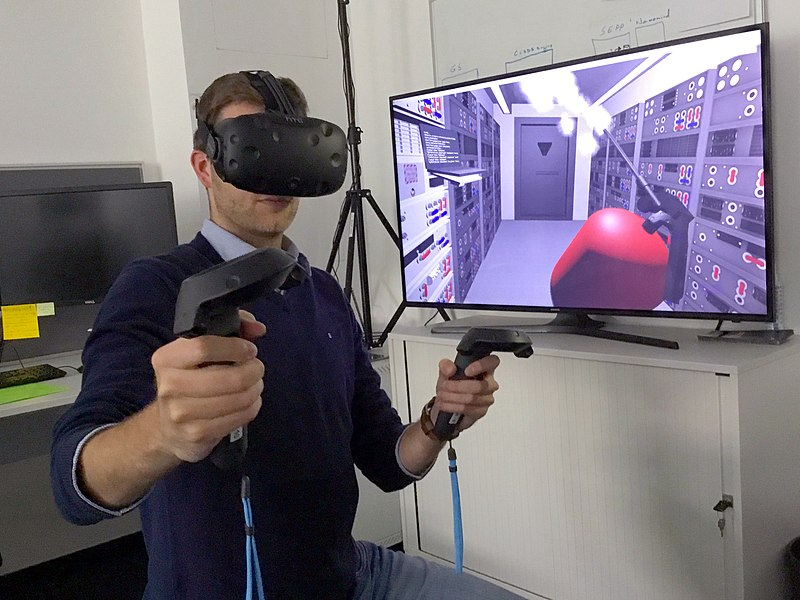

Pooyan Doozandeh
State College, PA, USA
pooyan.doozandeh@gmail.com
I am a PhD candidate in the College of Information Sciences and Technology (IST) at Penn State University. The topics of my professional interest are human factors and ergonomics and user experience research. My job often requires knowing about humans and technology; so, I am trained in psychology and computer engineering.
I belong to a group of old-school psychologists who have a strong commitment to practical affairs. So, figures such as Edward L. Thorndike and John C. Flanagan exemplify my type.
To read my opinions about some areas of my interest, see the Opinions page here.
Highlights of Industry Experience
2020: In a collaborative project between Aira Tech Corp. (San Diego, CA) and Penn State University, I helped improving the design of interfaces for agents who remotely guide people with visual impairments.
2018 – 2019: With Charles River Analytics Inc. (Cambridge, MA), I conducted a literature review and a meta-analysis to understand the effect of simulation fidelity on training transfer (see List of Written Works 7, 8, and 12).
Teaching Experience
2021 – 2022: I am an instructor in Penn State College of Information Sciences and Technology (IST) for a course with the title of Training and Technology. Because the topic has been central to my research, I am fortunate to have the chance to design the entire course and create its content. Videos of some lectures are available here.
2016 – 2021: I was a teaching assistant in Penn State IST for Foundations of Human-Centered Design and Statistics. Prior to joining Penn State (from 2016 to 2018), I was a teaching assistant in Lehigh University’s Psychology Department for courses in Psychology and Cognitive Science.
2015 – 2016: I was a high school instructor, teaching Introduction to Programming with C# to senior high school students.
Last updated on December 2021
Education
2018 – Current
Ph.D., Information Sciences and Technology (Human-Centered Design) – The Pennsylvania State University, University Park, PA, USA
2016 – 2018
M.S. (unfinished), Psychology – Lehigh University, Bethlehem, PA, USA
2013 – 2016
M.S., Computer Engineering (AI and Robotics) – Iran University of Science and Technology, Tehran, Iran
2011 – 2013
B.S., Computer Software Technological Engineering – Jaaber Ibn Hayyan Higher Education Institute, Rasht, Iran
2008 – 2011
A.S., Computer Software – Shahid Chamraan Technical College, Rasht, Iran
Highlights of Research Projects
These are some of the research projects that I led during the last few years. You can find the reference numbers to publications at the bottom of this page.
Simulation Fidelity and Training
|

A Virtual Reality Simulator Used in Training |
2018 – 2022: I tried to understand the effect of the realism of training materials (or simulation fidelity) on the effectiveness of training (or transfer). I conducted a series of studies, including a literature review and a meta-analysis, to determine the relationship between fidelity and transfer [7, 8, 12]. Although the focus of this project was on the domain of troubleshooting electro-mechanical systems, other domains such as medical education, aviation, and transportation were also reviewed. The modality of training devices ranged from simple drawings on a paper to virtual reality systems and sophisticated flight simulators.
Designing Training Simulators

A Simulator Used to Train Truck Driving |
2019 – 2021: I proposed a method that systematizes the use of experts' performance in designing training simulators. The method uses the videorecording of experts at work (ethnography) to model their performance, and the model can directly guide the design of training simulators [9]. Similar to the research above, training in domains such as maintenance and troubleshooting, transportation, and using medical devices can benefit from this design method.
Designing Online Job Descriptions
|
A Video of A Job |
2020 – 2022: In this research I investigated the possible use of video on creating online job descriptions [14]. The question is whether embedding a short video of a job and a day of life of an employee can influence job-seekers' attitude toward that job and organization, and whether it has any effect on job-seekers' decision to pursue employment in that job and organization.
Sometimes, I enjoy addressing fundamental issues in my studies [11, 13]. For example, being convinced of the soundness of my research requires knowing about the history and foundational issues of psychology and its methods. In this respect, me and my colleague wrote a philosophically-oriented article that discusses the reason of our aversion to cognitivism and our defense of behaviorism [11].
As part of my education in computer engineering (machine learning and AI), I conducted a project to understand human learning of functional relations (continuous-valued causal relations) [5]. The ultimate goal was to implement human learning in machines and understanding how human learning works. This was an example of basic science, but over time my interest has shifted toward applied topics.
I have also written articles on other topics of interest to academia in general, such as some aspects of technical and academic writing [6]. Finally, I am sharing some unpublished manuscripts that I wrote some years ago. They are not professional works in any sense; I was inexperienced when writing them. Nonetheless, they can show the evolution of my interests [1 – 4].
Written Works
Under review or in preparation
[14] Doozandeh, P. (in progress). The effect of video job description on recruitment. In preparation.
[13] Doozandeh, P. (in progress). A fundamental question of applied psychology. In preparation.
[12] Doozandeh, P., & Hedayati, S. (2021). The effect of fidelity on transfer: A meta-analysis in the domain of troubleshooting. Under review.
[11] Doozandeh, P., & Hedayati, S. (2021). Misusing concepts and cognitive crisis of psychology. Under review.
Peer-reviewed publications
[10] Doozandeh, P., Wang, Z., Cui, L., & Yu, R. (2021). Street surface condition of wealthy and poor neighborhoods: The case of Los Angeles. AI & Society, (in press)
[9] Doozandeh, P. (2021). Videorecording of experts as a method of training-simulator design. Theoretical Issues in Ergonomics Science, (in press). (Free access from publisher, limited copies) (Access from publisher) (Manuscript)
[8] Doozandeh, P. (2021). From surface realism to training considerations: A proposal for changing the focus in the design of training systems. Theoretical Issues in Ergonomics Science, 22(6), 689–728. (Free access from publisher, limited copies) (Access from publisher) (Manuscript)
[7] Doozandeh, P., & Ritter, F. E. (2019). Does simulation fidelity affect training? A lesson from a brief review of literature. In Proceedings of the 2019 International Conference on Social Computing, Behavioral-Cultural Modeling & Prediction and Behavior Representation in Modeling and Simulation (SBP-BRiMS). Washington DC: George Washington University. (Free access from publisher)
[6] Doozandeh, P., & Ritter, F. E. (2019). Some tips for academic writing and using Microsoft Word. XRDS: Crossroads, The ACM Magazine for Students, 26(1), 10–11. (Free access from publisher)
[5] Doozandeh, P. (2016). Quantification of human confidence in functional relations. Cognitive Systems Research, 40, 18–34. (Access from publisher) (Manuscript)
Unpublished
[4] Doozandeh, P. (2015). A short essay on Hume’s philosophy, its essence and implications. (Manuscript)
[3] Doozandeh, P. (2015). Categorization of real-world causal events for causal modeling. (Manuscript)
[2] Doozandeh, P. (2015). Introspection, emotion, and computational theory of mind. (Manuscript)
[1] Doozandeh, P. (2014). Emotion behind intelligence. (Manuscript)